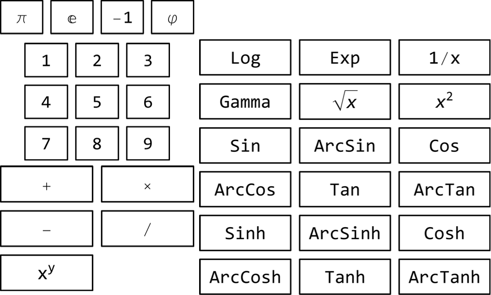

Enter the number to identify or approximate:
=
RPN:
Mathematica:
Search use the "standard" 36-button scientific RPN calculator.

Enter any real number to find out, if some sequence of the above buttons could re-discover it. Use floating-point format, e.g:
Search is currently limited to code length of 5, performed using single thread and real numbers. To use longer sequences, custom calculators, complex numbers, recognition of functions and massively multi-threaded search, wait for new version or contact author at andrzej.odrzywolek@uj.edu.pl. ENJOY!
UPDATED: 2024-01-05 20:39